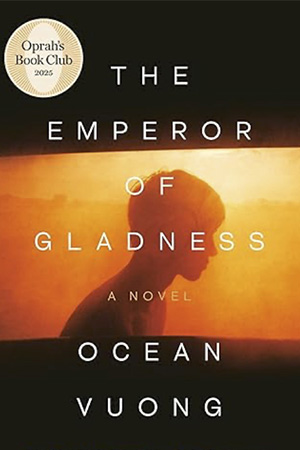
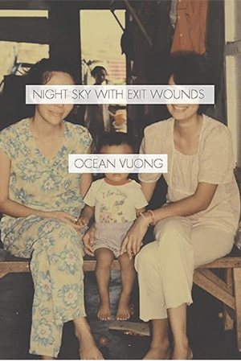

In 2016, Ocean Vuong published his first full-length poetry collection, Night Sky with Exit Wounds, released by Copper Canyon Press. The book was widely acclaimed for its lyrical intensity and exploration of war, exile, and queer identity. It won several prestigious awards, including the T. S. Eliot Prize, the Whiting Award, and the Forward Prize for Best First Collection, quickly establishing him as one of the most important new voices in contemporary poetry.
The success of Night Sky with Exit Wounds led to invitations for public readings at universities, literary festivals, and cultural institutions around the world. Unlike the underground circuits of earlier generations of poets, Vuong’s performances were marked by a quiet, reflective delivery that contrasted with the raw urgency of his themes. These readings brought his work to broader audiences and solidified his reputation as both a poet and cultural figure engaged in questions of memory, migration, and belonging.
Works



